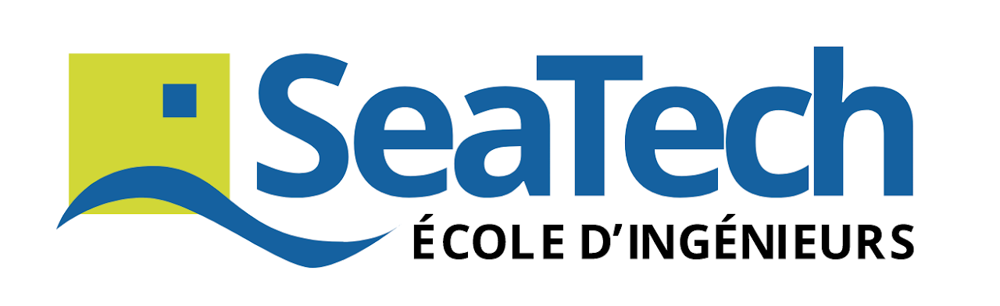
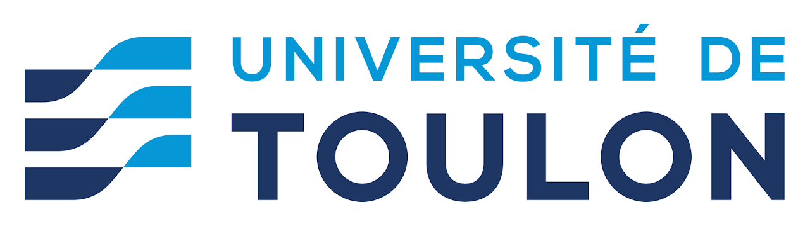
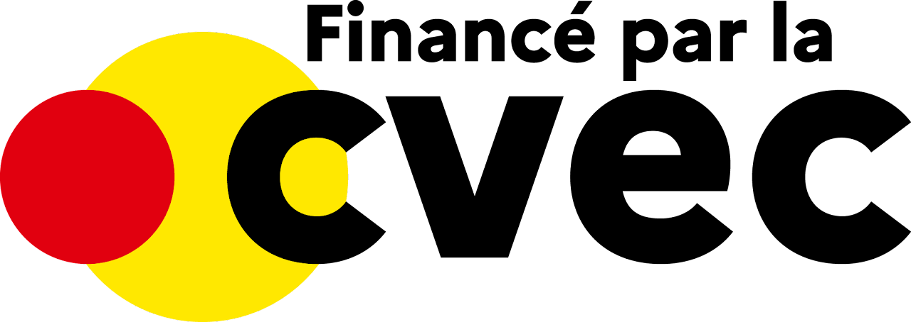
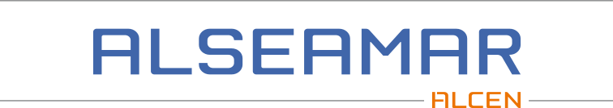
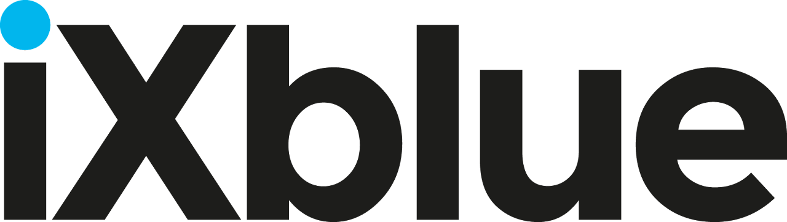
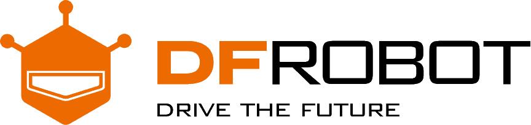
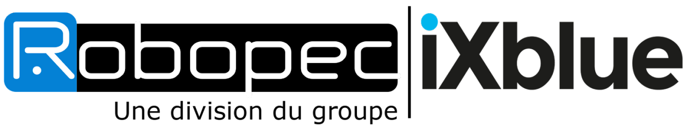
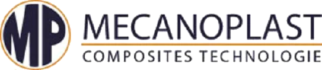

SeaTech est une école d’ingénieurs experte dans les sciences et technologies dédiées au secteur maritime, composante de l’Université de Toulon.
Elle vous offre les meilleures conditions d’études et d’apprentissage, tout en consacrant une large place à la vie étudiante.
École d’ingénieurs en région Provence-Alpes-Côte-d’Azur, elle recrute des étudiants à Bac+2 pour une formation en 3 ans.

Créée en 1968 et autonome depuis le 1er janvier 2012, l’Université de Toulon (UTLN) place l’attractivité au cœur de son contrat pluriannuel.
Elle s’appuie sur son fort ancrage territorial, notamment ses liens avec le monde socio-économique de la région, pour accorder son offre de formation et ses activités de recherche aux attentes des partenaires économiques et institutionnels.

La CVEC permet de développer des services utils dans le quotidien des étudiants, dans leur établissement et dans le Crous de leur académie.
En améliorant leurs conditions de vie sur les campus, elle permet de favoriser la réussite tout en diminuant le coût de la rentrée.

Production des équipements marins et sous-marins de hautes technologies et des services innovants. Développement des systèmes navals performants.
Fournisseur des services navals, sous-marins et offshore, une expertise en ingénierie pour prolonger la durée de vie des installations offshore et des plateformes navales.

Reconnue dans le monde entier pour fournir des solutions avancées de navigation, de photonique et d'autonomie maritime, iXblue s'engage à aider ses clients à relever leurs défis les plus difficiles, de la haute mer à l'espace extra-atmosphérique.
Animés par un esprit pionnier et une culture de l'innovation, ses employés s'efforcent de repousser les limites du possible, qui aide ses clients à explorer et à construire un monde plus sûr et durable.

DFRobot a été fondée à partir d'une communauté locale de makers en 2008. Parmi les premiers à adopter le matériel open source, nous continuons à créer des produits matériels et logiciels innovants et conviviaux qui deviennent les éléments de base de toute sorte de projets électroniques, tout en favorisant une forte communauté d'apprenants autour de ces produits.
Après une décennie, DFRobot s'est étendue du matériel open source à l'éducation STEM, à la fabrication et à d'autres industries. Les lignes de production de l'entreprise vont des gadgets autour d'Arduino, LattePanda, Raspberry Pi, micro:bit, aux kits d'apprentissage complets pour les élèves de la maternelle à la 12e année, tels que le kit Boson, la série micro:Maqueen et Mind Plus.

Vous avez un engin ou un process non automatisé, ils le "robotisent" ou ils conçoivent un système robotisé complet satisfaisant votre besoin.
Vous avez déjà un système robotisé, ils lui ajoutent des fonctionnalités de perception et d'intelligence.
En phase amont, ils peuvent vous aider à établir votre cahier des charges au travers de prestations d'expertises, d'études de faisabilité ou de réalisation de prototypes.
De la pré-étude à la maintenance en passant par le développement, l’intégration et les tests, ils vous livrent un système clef en main.

Implantée depuis plus de 35 ans dans la distribution des matériaux composites, MECANOPLAST COMPOSITES TECHNOLOGIE, à La Crau près de Toulon dans le département du Var, est présente dans les domaines du nautisme, de l’aéronautique, de l’industrie, et autres applications techniques et artistiques.
Ils mettent à votre service une équipe performante et disponible, de la conception à la réalisation de votre projet, que vous soyez un professionnel ou un particulier.